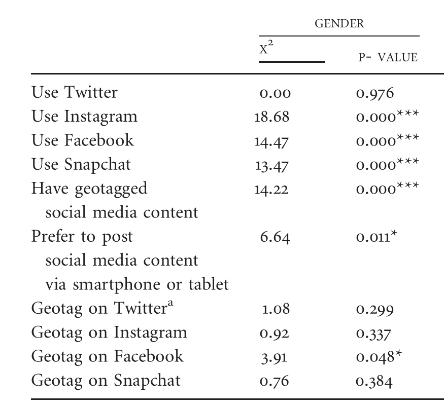
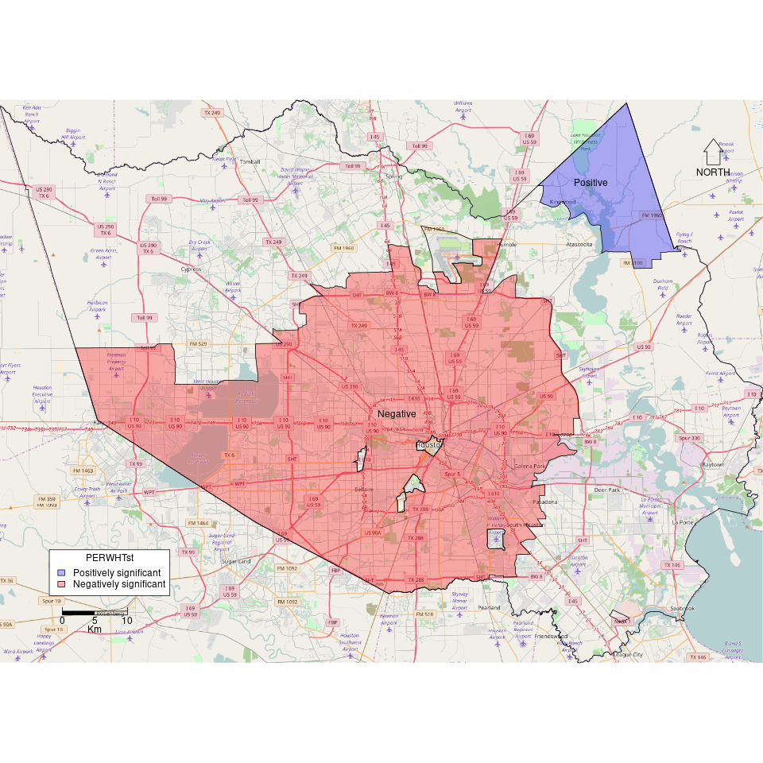

Location-based Social Media in a GIScience Context
Matthew Haffner
Department of Geography
Oklahoma State University
How Location-based Social Media (LBSM) Fits Into a GIScience Research Program
- Spatial data mining/capture
- Programming
- GIS Cyberfrastructure
- Spatial statistics
- Cognition of geographic phenomena
Structure of This Presentation
- Location-based social media behavior and perception: Views of university students
- A (critical) spatial analysis of non-English Twitter activity in Houston, Texas
- How this research fits into ECU, Greenville, and the surrounding region
1. Location-based social media behavior and perceptions: Views of university students
VGI and LBSM
- Volunteered geographic information (VGI; Goodchild 2007)
- Location-based social media (LBSM; see Evans 2015)
- Platform (e.g. Facebook, OpenStreetMap) biases (Bartoshek and Kebler 2013; Stephens 2013; Mathews et al. 2013; Zickuhr 2013; Greenwood, Perrin, and Duggan 2016)
- Significance: contributors' demographics have implications
Research focus
- Demographics, usage patterns, and perceptions
- Questions
- Are there differences in terms of gender, race, and academic standing?
- Why do people contribute?
- What are the implications?
Data
- Survey administered to 5000 random Oklahoma State students
- 46 questions with 7 sections
- Demographics
- Mobile phone and tablet use
- Social media use
- Geotagging on social media
- Instagram use
- Twitter use
- LBSM perceptions
- n = 253
Demographics of survey respondents

Methods
- Differences in use:
- Chi-square tests
- Perception:
- Likert-scale items: Ordinal logistic regression (OLR)
- Open-ended items: Qualitative summaries
Use of Social Media and LBSM

Use of Social Media and LBSM

Chi-squared tests for use of social media and LBSM

Chi-squared tests for use of social media and LBSM

"Geotagging social media posts is a good way to let my friends and my followers know where I am and what I am up to."


"I feel that geotagging infringes on my privacy."


"Locational journaling"
Why do you choose to geotag social media posts?
- "So that I can look back and remember where I was and what I was doing at certain times."
- "To remember where I was at the time of the post."
- "So I can remember where and what I did in my life."
The importance of place
Why do you choose to geotag social media posts?
- "Usually it's just to further emphasize the caption."
- "[B]ecause where I am is important to the post."
- "Because where I am is part of the story being told by my post."
Why do you choose to geotag social media posts?

Implications/Conclusions
- Twitter is reasonably representative
- Most differences are between males and females
- Not all VGI principles apply to LBSM
- Motivating factor: locational journaling
- Users geotag content at places they visit infrequently
Haffner, M., Mathews, A. J., Fekete, E., Finchum, G. A. 2017.
Location-based social media behavior and perceptions: Views of
university students. Geographical Review doi: 10.1111/gere.12250.

A (Critical) Spatial Analysis of Non-English Twitter Activity in Houston, Texas
Workflow
- Operating system: Manjaro (Arch Linux derivative)
- Programming/editing: Emacs/Vim
- Version control: Git (GitLab and GitHub)
- Spatial data mining: Python
- Data storage: ElasticSearch (NoSQL)
- Data management: Bash, Python, and R
- Spatial statistics/analysis: R
- Visualization and mapping: R



Contributions to East Carolina University
Contributions to East Carolina University
- Social media in disaster planning/preparedness
- Big data for modeling fluvial processes
References
- Bartoschek, T. and C. Kebler. 2013. VGI in Education: From K-12 to Graduate Studies. In Crowdsourcing Geographic Knowledge, edited by D. Sui, M. F. Goodchild, and S. Elwood, 341-360. Dordrecht, Netherlands: Springer.
- Evans, Leighton. 2015. Locative Social Media: Place in the Digital Age. Baginstroke, U.K.: Palgrave-Macmillan.
- Goodchild, M. F. 2007. Citizens as Sensors: The World of Volunteered Geography. GeoJournal 39 (4): 211-221.
- Greenwood, S., A. Perrin, and M. Duggan. 2016. Social Media Update 2016. Pew Research Center. [http://www.pewinternet.org/2016/11/11/social-media-update-2016/]
- Mathews, A., Y. Lu, M. Patton, N. Dede-Bamfo, and J. Chen. 2013. College Students' Consumption, Contribution, and Risk Awareness Related to Online Mapping Services and Social Media: Does Geography and GIS Knowledge Matter? GeoJournal 78 (4): 627-639.
- Stephens, M. 2013. Gender and the GeoWeb: Divisions in the Production of User-generated Cartographic Information. GeoJournal 78: 981-996.